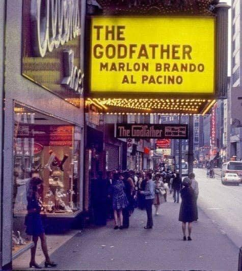
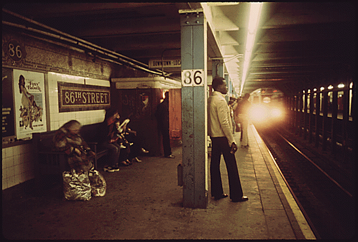

Bombed
Bombed
Lookin’ sharp outside Port Authority, 1980s

Nassau Street, looking Towards Wall Street, 1976
Marlo Thomas

Jammin’ in Park Slope, 7th Ave between 14th & 15th Streets, 1977
Ugly tags at 145th Street, 1978

Dreaming of graffiti…

Westside Camera, 88th and Broadway, 1981

Broadway between 71st and 72nd Streets, 1974

8th Ave at 116th Street in the 70s. (8th Ave is now Frederick Douglass Blvd up there)
M11 outside of Bagel Nosh, 1981
Old ladies on patrol, 1970s

1986
Those cars never seem to stop comin’…
Notes from underground, 1970s
C train in rough shape, 1987
An odd couple

Empire State Building in the distance, 1970s

Lookin’ sharp! Easter in Harlem, 1968

Chillin’ out maxin’ relaxin’ all cool, at John Jay Pool, 1973

Dude going up high for a block. 109th between 5th and Madison, 1968.

Stickball on Thompson Street, 1977
Herpes in 3, 2, 1…
Outside Beefsteak & Brew, 1978
The evaporation of joy.

New York City, 1972 by tandyman234

Waiting for the 6 train.

Tompkins Square Park Bandshell, 1989

Ridin’ the rails, 1975
Graffiti on a van in Times Square, 1975

Times Square, 1975